LVDS receiver lvds_rx_x3: circuit and simulation gallery
Three-lane LVDS receiver macro in GF180MCU 3.3 V devices. State on 2026-11-15: layout of the whole macro done and checked; stage 2 re-sized after the first post-layout simulation; final verification under way (section 5).
The schematics below were drawn by hand (by script) from the netlist netlist/lvds_rx_core.spice; they are not generated from it. The waveform plots are single runs at the typical corner (27 °C, 3.3 V) with ideal sources, made as illustrations. The pass/fail record of the design is the regression in results/, not these pictures.
1. What the circuit does
An LVDS link sends each bit as a small voltage difference between two wires: about 0.1 to 0.35 V, sitting on a level anywhere between 0.05 and 2.35 V. The receiver looks only at which wire is higher and turns that into a normal 0 V / 3.3 V logic signal for the digital chip. The macro holds three identical receivers (lanes) that share one bias block, plus an enable pin (EN) that switches everything off.
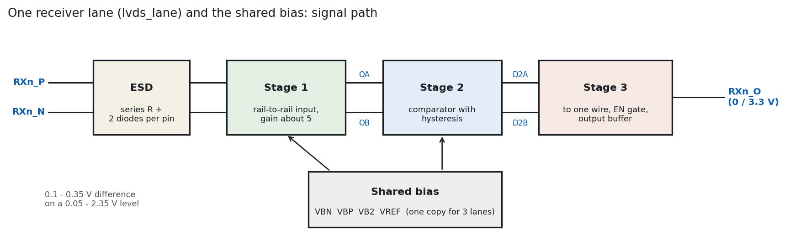
2. The schematic, stage by stage
Stage 1: input stage
Job: accept the two input wires at any level from near 0 V to 2.35 V, and enlarge their difference.
- Two input pairs. A PMOS pair (Mp1a/b) works when the inputs are near ground; an NMOS pair (Mn1a/b) works when the inputs are high. Together they cover the whole range. This is what "rail-to-rail" means.
- Dump devices (Mpda/b, Mnda/b, gates on VREF = about 1.6 V). When the inputs are high, the PMOS dump devices take the current the PMOS pair cannot use; when the inputs are low, the NMOS dump devices do the same for the NMOS pair. The result is that the gain stays almost the same over the whole input range instead of doubling in the middle.
- Folded branch (M3 sinks, M5 cascodes). The PMOS pair's signal current is turned around ("folded") so it lands on the same load as the NMOS pair's.
- Load resistors RLa/RLb turn the summed signal current into the output voltages OA and OB.
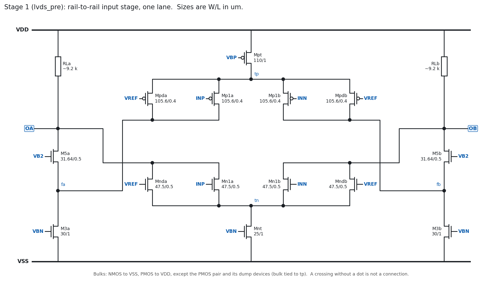
lvds_pre). Blue names are connections to other sheets.Stage 2: comparator with hysteresis
Job: make a firm decision and not change its mind on noise.
- A differential pair (Ms1/Ms2) compares OA and OB.
- Each side has two PMOS loads: a diode-connected one (Mld) and a cross-coupled one (Mlc) driven by the other side. The cross-coupled devices are a little stronger, so once the stage has decided, it holds that decision until the input moves a few millivolts past zero the other way. That gap is the hysteresis.
- Resistors Rs1/Rs2 make the size of that gap less dependent on the transistors.
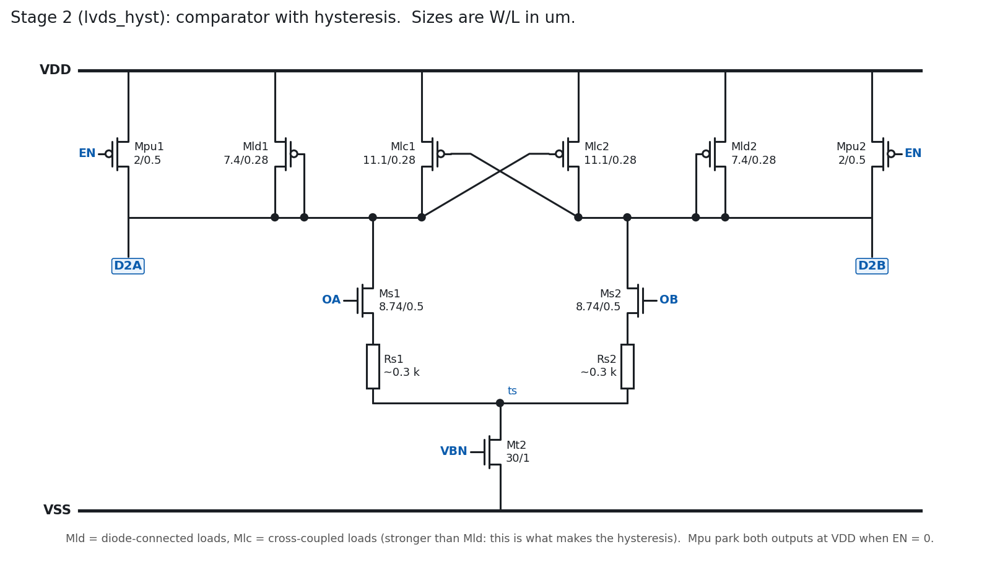
lvds_hyst).Stage 3: output
Job: turn the two-wire decision into one full-swing logic wire and drive it into the chip.
- Mp3a/b with the mirror Mn3a/b combine D2A and D2B into one node (d3) that swings from rail to rail.
- The NAND gate forces the output LOW when EN = 0.
- Three inverters, each larger than the last, give the output enough strength.
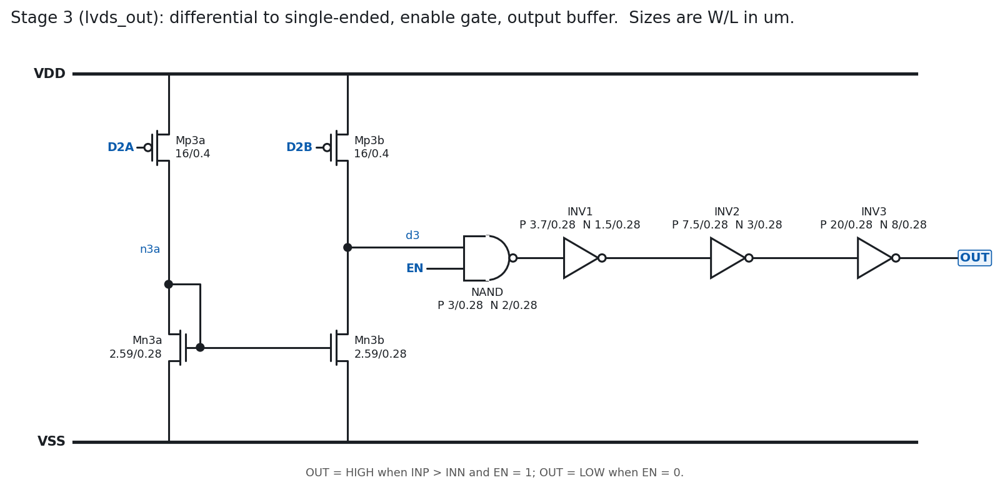
lvds_out). The NAND and inverters are shown as gate symbols; each is one PMOS/NMOS pair (two pairs for the NAND).Shared bias
Job: produce the four reference voltages the lanes need.
- Resistor Rrb and the diode-connected Mbn set a reference current; mirrors turn it into VBN and VBP (which set the currents in every stage) and VB2 (for the cascodes).
- A resistor divider makes VREF = 0.48 × VDD for the dump devices; Cvref keeps it quiet.
- EN = 0 opens every branch, so the macro draws almost no current when off.
Known weakness: this simple bias lets the currents change with supply, temperature and process (up to +60 % at the fast, hot, high-supply corner). It is the cause of the saturation-margin relaxation (decision D-012), which the audit accepted on condition that this corner is re-checked after layout. A constant-gm bias is the planned upgrade if it turns out to be needed.
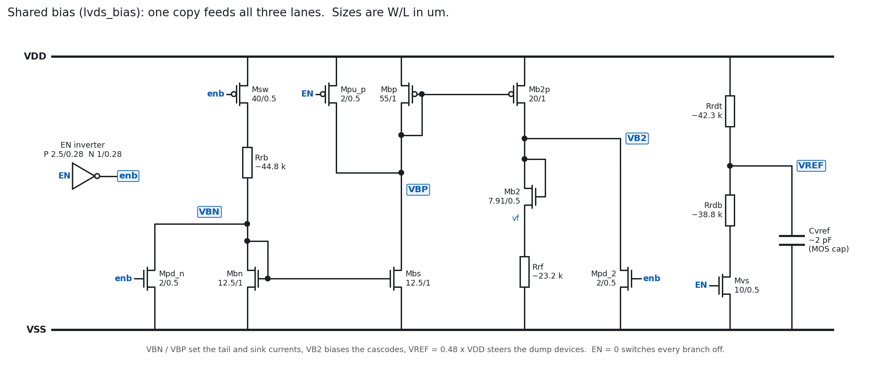
lvds_bias), one copy for all three lanes.Not drawn: each input pin also passes through a small protection cell (a series resistor and two diodes). That cell is flagged unqualified: it has not been tested as ESD protection.
3. Simulation pictures
A bit pattern travelling through the three stages
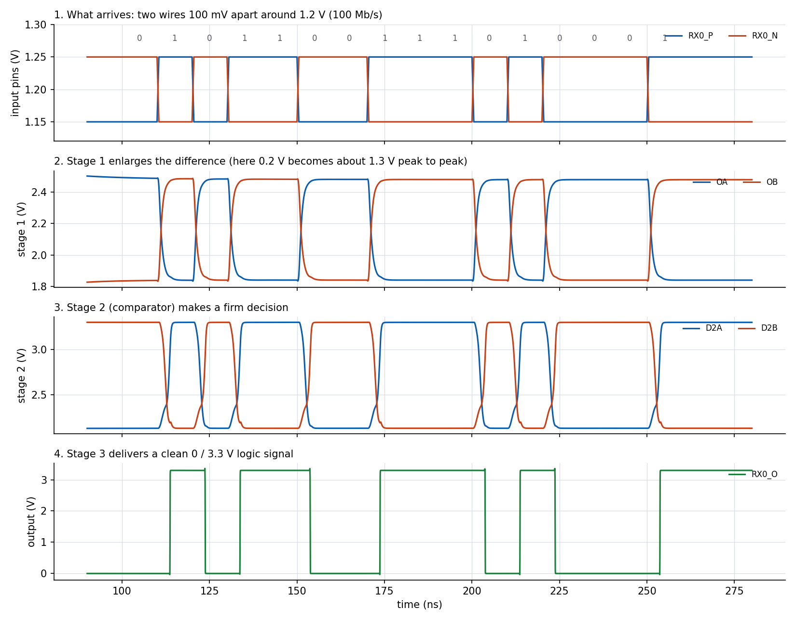
Hysteresis loop
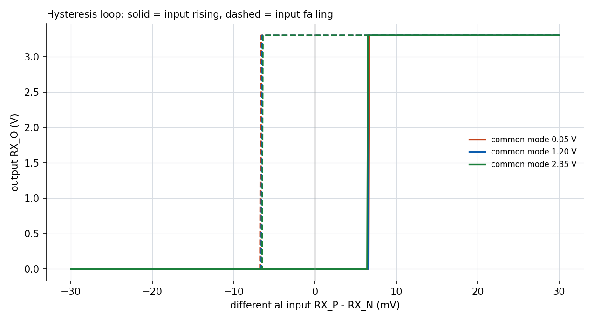
Stage-1 gain versus frequency
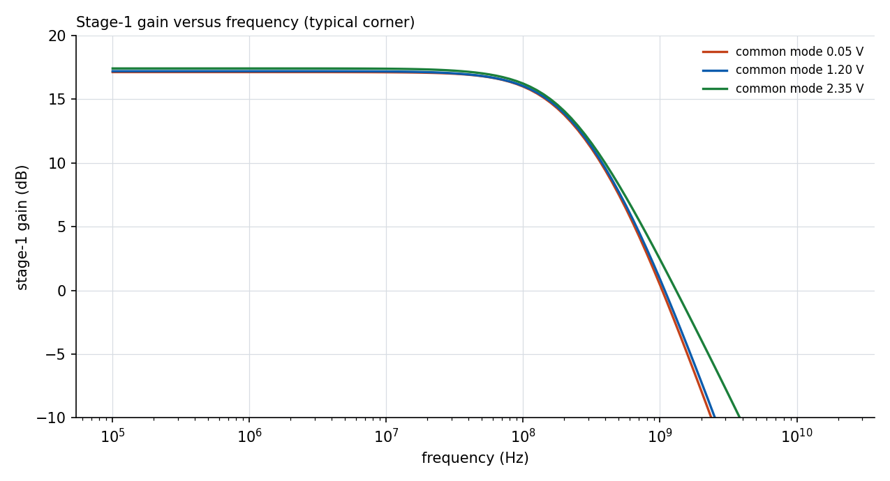
From the regression: eye diagrams
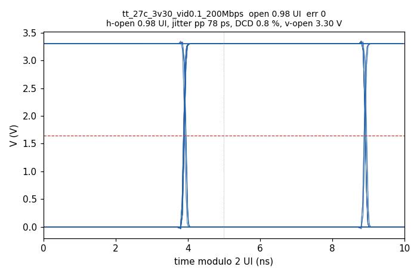
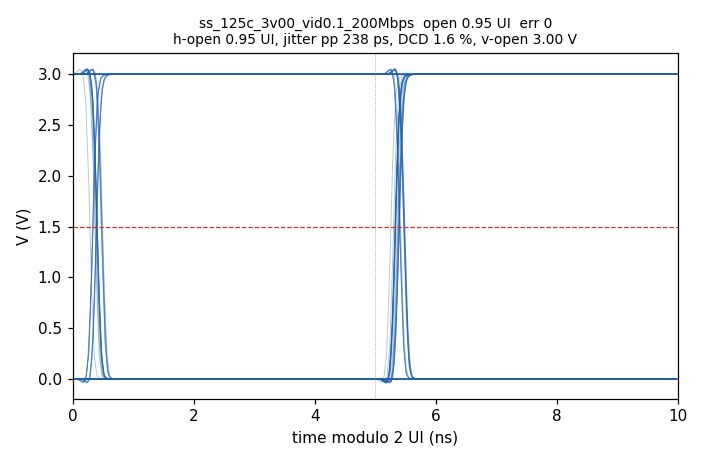
Both eye diagrams are from the full regression on the first frozen sizing (2026-11-14), before the post-layout re-size.
From the regression: Monte Carlo histograms (first sizing, before the 2026-11-15 re-size)
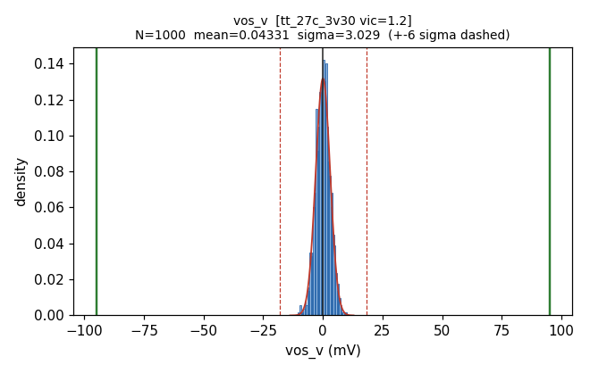
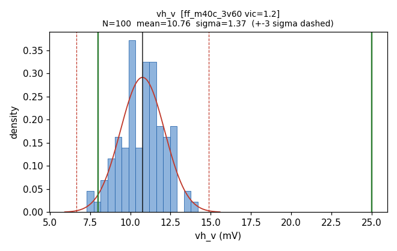
4. The layout
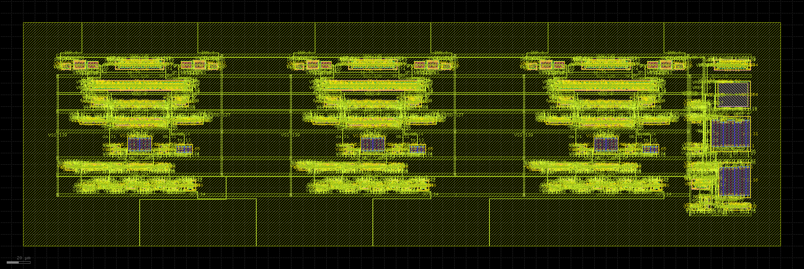
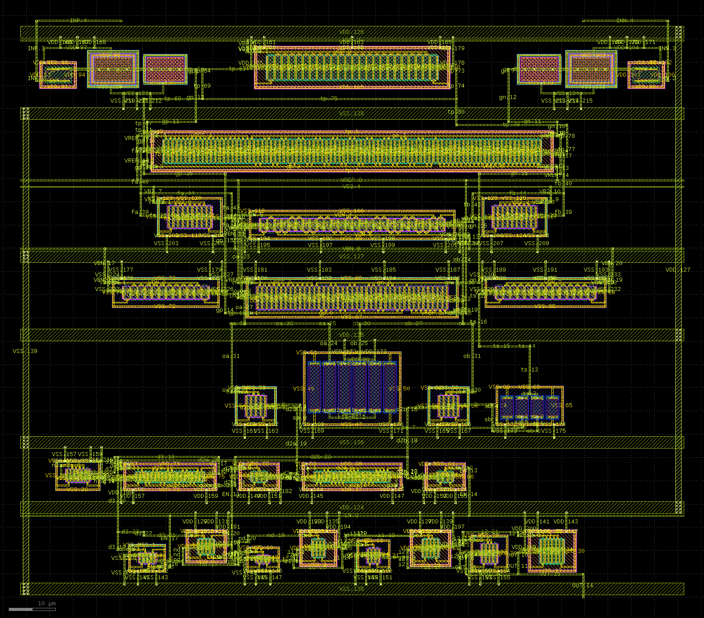
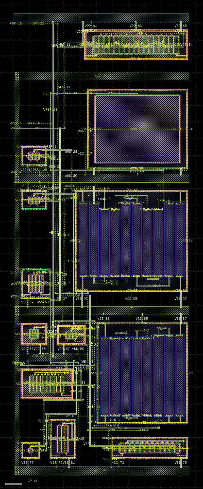
All three pass the foundry design-rule deck, strict layout-versus-schematic, the antenna checks and the deliberate-fault tests (gate LAYOUT). These pictures show the layout after the stage-2 re-size of 2026-11-15 (decision D-016); the outline did not change. docs/figures/make_layout_figures.py renders them from the delivered GDS files.
5. Where things stand
| Item | State on 2026-11-15 |
|---|---|
| Schematic (netlist) and sizing | Re-sized once after layout (decision D-016): stage 2 runs faster, and the simulations now include the layout's wiring capacitance. Frozen again (sizing/FROZEN.md) |
| Pre-layout regression | Passed on the first sizing (2026-11-14, 21,017 runs); re-running on the new sizing |
| Pre-layout audit | Pass with findings (results/AUDIT_1.md); the final audit (results/AUDIT_2.md) follows the post-layout runs |
| Layout | Done: lane, bias block and macro, every layout check passes; redrawn for the new sizing |
| Post-layout simulation | The first run on the extracted layout missed the delay limit at the slow, hot, 3.0 V corner (6.8 ns against 5 ns), which led to the re-size; the new layout is being verified |
| Package (LEF, Liberty, Verilog model) | Generators written and dry-run checked; built after the post-layout runs |
Files: docs/figures/draw_schematic.py draws the schematics, docs/figures/make_waveforms.py runs and plots the three illustration simulations, docs/figures/make_layout_figures.py renders the layout pictures. More detail: DESIGN_GUIDE.md and CARRY_ON_GUIDE.md in the project folder.